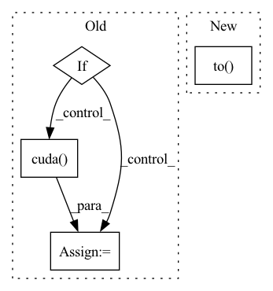

Pattern ID :60
Before Change
h = Variable(torch.zeros(batch_size, 32, row, col))
c = Variable(torch.zeros(batch_size, 32, row, col))
if self.use_GPU:
h = h.cuda()
c = c.cuda()
x_list = []
for i in range(self.iteration):
After Change
c = Variable(torch.zeros(batch_size, 32, row, col))
h = h.to(device)
c = c.to( device)
x_list = []
for i in range(self.iteration):
In pattern: SUPERPATTERN
Frequency: 3
Non-data size: 4
Instances Fragment ID: 221810
Project Name: shenzheng2000/sapnet-for-image-deraining
Commit Name: ec1d9e18796516691e65773583b14271cc658326
Time: 2021-08-11
Author: 69662345+ShenZheng2000@users.noreply.github.com
File Name: Modeling/network.py
M Class Name: SAPNet
N Class Name: SAPNet
M Method Name: forward(2)
N Method Name: forward(2)
M Parent Class: nn.Module
N Parent Class: nn.Module
M File Name: Modeling/network.py
N File Name: Modeling/network.py
M Start Line: 132
M End Line: 164
N Start Line: 225
N End Line: 261
Before Change
def forward(self, anchor, positive, dist_keypts):
pids = torch.FloatTensor(np.arange(len(anchor)))
if torch.cuda.is_available():
pids = pids.cuda()
// if self.metric == "euclidean":
// distance = torch.sqrt(2 - 2 * torch.matmul(anchor, positive.transpose(0, 1)))
// return batch_hard(distance, pids, margin=self.margin)
dist = cdist(anchor, positive, metric=self.metric)After Change
self.safe_radius = safe_radius
def forward(self, anchor, positive, dist_keypts):
pids = torch.FloatTensor(np.arange(len(anchor))).to( anchor.device)
dist = cdist(anchor, positive, metric=self.metric)
dist_keypts = np.eye(dist_keypts.shape[0]) * 10 + dist_keypts.detach().cpu().numpy()
add_matrix = torch.zeros_like(dist)
add_matrix[np.where(dist_keypts < self.safe_radius)] += 10 Fragment ID: 221808
Project Name: xuyangbai/d3feat.pytorch
Commit Name: 41b6b76a3d240e1e6d59970c4f243051f37d6233
Time: 2020-05-24
Author: 653823597@qq.com
File Name: utils/loss.py
M Class Name: ContrastiveLoss
N Class Name: ContrastiveLoss
M Method Name: forward(4)
N Method Name: forward(4)
M Parent Class: nn.Module
N Parent Class: nn.Module
M File Name: utils/loss.py
N File Name: utils/loss.py
M Start Line: 66
M End Line: 77
N Start Line: 67
N End Line: 73
Before Change
u_coord = u_coord.reshape(height * width).float()
coords = torch.stack((u_coord, v_coord), dim=1) // HW x 2
tgt_coords_dense = coords.unsqueeze(0).expand(batch_size, height * width, 2) // B x HW x 2
if config["gpuid"] != "cpu":
tgt_coords_dense = tgt_coords_dense.cuda()
pseudo_coords = torch.matmul(tgt_coords_dense.transpose(2, 1).contiguous(),
soft_match_vals.transpose(2, 1).contiguous()).transpose(2, 1).contiguous() // BxNx2
After Change
v_coord = v_coord.reshape(height * width).float() // HW
u_coord = u_coord.reshape(height * width).float()
coords = torch.stack((u_coord, v_coord), dim=1) // HW x 2
tgt_coords_dense = coords.unsqueeze(0).expand(batch_size, height * width, 2).to( self.gpuid) // B x HW x 2
pseudo_coords = torch.matmul(tgt_coords_dense.transpose(2, 1).contiguous(),
soft_match_vals.transpose(2, 1).contiguous()).transpose(2, 1).contiguous() // BxNx2 Fragment ID: 221813
Project Name: utiasasrl/hero_radar_odometry
Commit Name: dcd5074dd5dff7bab272cddac2ba50b426590076
Time: 2020-11-13
Author: keenburn2004@gmail.com
File Name: networks/softmax_matcher.py
M Class Name: SoftmaxMatcher
N Class Name: SoftmaxMatcher
M Method Name: forward(5)
N Method Name: forward(5)
M Parent Class: nn.Module
N Parent Class: nn.Module
M File Name: networks/softmax_matcher.py
N File Name: networks/softmax_matcher.py
M Start Line: 20
M End Line: 54
N Start Line: 21
N End Line: 52